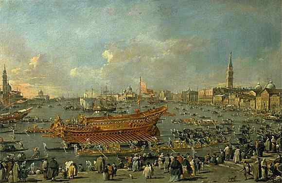

Francesco Guardi
1712-1793
La Partida del Bucentauro hacia el Lido de Venecia, el día de la Ascensión
Lienzo
A 66 cm; L 1,01 m
INV 20009
El cuadro pertenece a una serie de doce (de los que diez están en el museo del Louvre y los otros dos en Grenoble y Bruselas) que ilustran las fiestas organizadas en Venecia para la elección del Dogo Alviso IV Mocenigo en 1763. Pintados una decena de años tras las ceremonias, los lienzos se inspiran en composiciones grabadas de Antonio Canaletto, otro maestro de la "veduta" en Venecia. Aquí asistimos a la salida de la galera del Bucentauro hacia el Lido, donde el Dogo celebraba cada año la Ascensión y el matrimonio de Venecia con el Adriático. Es un pretexto para que Guardi pinte, con su toque vibrante y con una sensibilidad de la atmósfera del todo moderna, una ciudad luminosa y febril que vive entre el agua y el cielo.
ATRAS